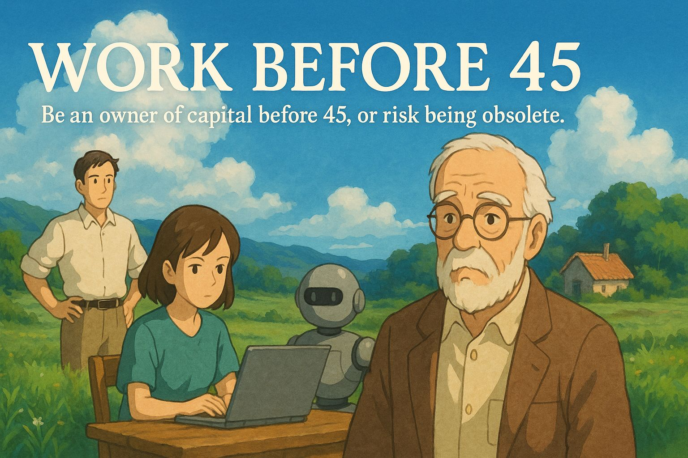

ถ้าระบบเริ่มผลักคนออกจากงานตั้งแต่อายุ 45 สังคมจะไม่ได้แก่ลงอย่างเดียว แต่มันจะบิดโครงสร้างทุนและแรงงานทั้งระบบ
{kind=link}

โพสต์นี้เริ่มจากเรื่องเล็กที่กระทบแรงมาก คือข้อความจากน้องสาวที่ทำงานธนาคารเกี่ยวกับโครงการ early retire ตั้งแต่อายุ 45 แต่ผู้เขียนไม่ได้มองแค่มาตรการองค์กร หากใช้มันเป็นจุดตั้งต้นในการวาดภาพว่า ถ้าระบบแรงงานเริ่มบอกคนตั้งแต่อายุยังไม่มากว่า หมดสิทธิ์ทำงานแล้ว สังคมจะหน้าตาเปลี่ยนไปอย่างไร
คำตอบที่โพสต์นี้เสนอคือ เราอาจได้สังคมที่โครงสร้างบิดเบี้ยวมากขึ้น คนแก่เป็นเจ้าของทุนและอำนาจ คนอายุน้อยเป็นแรงงานชั่วคราว AI ทำงานหลัก แต่คนอายุเกิน 45 ที่ไม่มีทุนกลับเสี่ยงกลายเป็น แรงงานส่วนเกิน ทั้งที่ยังมีสุขภาพ เวลา และประสบการณ์อยู่ครบ นี่จึงไม่ใช่แค่ปัญหาปากท้องรายบุคคล แต่คือการเปลี่ยนสมการระหว่างแรงงาน ทุน และศักดิ์ศรีของชีวิตทั้งระบบ
ถ้าคนอายุ 45+ ถูกผลักออกจากระบบเร็วเกินไป สังคมกำลังทิ้งทั้งประสบการณ์และศักยภาพของคนจำนวนมากแบบฟรี ๆ
ประเด็นที่สำคัญมากของโพสต์นี้คือการชี้ว่า คนอายุเกิน 45 ยังมีทั้งเวลา สุขภาพ และประสบการณ์ในการทำงาน แต่ถ้าระบบประกาศว่าคนกลุ่มนี้หมดสิทธิ์แล้ว ความรู้และความสามารถที่สะสมมาทั้งชีวิตก็จะถูกทิ้งไปโดยไม่ได้ใช้ประโยชน์อย่างเหมาะสม
ปัญหาจะยิ่งหนักถ้าคนกลุ่มนี้ไม่มีทุนสะสม ไม่ว่าจะเป็นบำนาญ หุ้น อสังหาริมทรัพย์ หรือสินทรัพย์อื่น เพราะสุดท้ายพวกเขาจะกลายเป็นคนที่ยังมีแรง แต่ไม่มีพื้นที่ให้ใช้แรงนั้น และต้องมีชีวิตอยู่ต่อในสภาพที่ระบบไม่ต้องการอีกแล้ว
ในโลกแบบนี้ AI และ automation จะยิ่งเสริมให้ทุนกระจุกตัว ถ้าไม่มีการออกแบบให้ทุนกลับไปสร้างคุณค่าทางสังคม
ผู้เขียนชี้อย่างตรงไปตรงมาว่า เมื่อแรงงานหายหลังอายุ 45 และจำนวนคนวัยทำงานช่วง 20-45 ปีก็ลดลงจากสังคมเกิดน้อย ฝั่งทุนย่อมหันไปพึ่ง AI + automation มากขึ้นเพื่อลดการพึ่งพาคน ผลลัพธ์คือคนที่เข้าถึงเทคโนโลยีและทุนได้อยู่แล้วจะยิ่งได้เปรียบ และความเหลื่อมล้ำจะยิ่งกว้างขึ้น
แต่โพสต์นี้ไม่ได้หยุดแค่การเตือนภัย เพราะยังเสนอว่าทุนเองก็จะเจอคำถามกลับว่า ถ้าไม่มีคนมีกำลังซื้อหรือไม่มีคนมาใช้บริการ ทุนจะมีความหมายอะไรต่อไป ทางออกจึงอาจไม่ใช่แค่การสะสมทุนเงิน แต่คือการแปลงมันเป็น ทุนเพื่อสังคม ผ่านสุขภาพ การศึกษา สิ่งแวดล้อม และคุณภาพชีวิตของชุมชน
โจทย์สำคัญของคนรุ่นเราและรุ่นลูกคือ ต้องรีบเปลี่ยนความรู้ ชุมชน และทรัพย์สินให้กลายเป็นทุนก่อนถูกผลักออกจากระบบ
ช่วงท้ายของโพสต์จึงเป็นทั้งคำแนะนำและคำเตือนว่า ถ้าโลกกำลังมุ่งไปสู่โครงสร้างแบบนี้ คนรุ่นปัจจุบันต้องรีบหาวิธีเปลี่ยนความรู้และประสบการณ์ให้เป็นทุน เช่น การเป็นที่ปรึกษา ครู โค้ช หรือนักวิจัยอิสระ ขณะเดียวกันก็ต้องสร้าง ทุนสังคม และเศรษฐกิจท้องถิ่นที่ช่วยให้คนยังมีบทบาทแม้จะไม่อยู่ในตลาดแรงงานแบบเดิม
สำหรับรุ่นลูกหลาน คำเตือนยิ่งชัดกว่าเดิม คือพวกเขาอาจต้องกลายเป็นเจ้าของทุนให้เร็วขึ้นกว่ารุ่นพ่อแม่ ไม่ว่าจะเป็นอสังหาริมทรัพย์ สินทรัพย์ก่อรายได้ หรือทรัพยากรจริงอย่างที่ดิน น้ำ และพลังงาน เพราะในโลกที่ AI กดค่าของแรงงานลง เงินเดือนเพียงอย่างเดียวอาจไม่เพียงพออีกต่อไป คำถามปิดของโพสต์จึงแรงมากว่า เราพร้อมหรือยังที่จะเป็นเจ้าของทุนก่อนอายุ 45 ไม่เช่นนั้นเราอาจถูกนิยามใหม่ว่าเป็นแรงงานหมดอายุทั้งที่ชีวิตยังอีกยาว